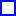
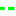
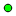
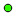

<!doctype html>
<html lang="en">
    <head>
        <meta charset="utf-8">
        <meta http-equiv="X-UA-Compatible" content="IE=edge">
        <meta name="viewport" content="initial-scale=1,user-scalable=no,maximum-scale=1,width=device-width">
        <meta name="mobile-web-app-capable" content="yes">
        <meta name="apple-mobile-web-app-capable" content="yes">
        <link rel="stylesheet" href="css/leaflet.css">
        <link rel="stylesheet" href="css/qgis2web.css">
        <link rel="stylesheet" href="css/leaflet-measure.css">
        <style>
        html, body, #map {
            width: 100%;
            height: 100%;
            padding: 0;
            margin: 0;
        }
        </style>
        <title>West Wits Mineral Rights and Property</title>
    </head>
    <body>
        <div id="map">
        </div>
        <script src="js/qgis2web_expressions.js"></script>
        <script src="js/leaflet.js"></script>
        <script src="js/leaflet.rotatedMarker.js"></script>
        <script src="js/leaflet.pattern.js"></script>
        <script src="js/leaflet-hash.js"></script>
        <script src="js/Autolinker.min.js"></script>
        <script src="js/rbush.min.js"></script>
        <script src="js/labelgun.min.js"></script>
        <script src="js/labels.js"></script>
        <script src="js/leaflet-measure.js"></script>
        <script src="data/RandQuestSyndicateArea_0.js"></script>
        <script src="data/RQSPointsWG27_1.js"></script>
        <script src="data/RQSPointsWG29_2.js"></script>
        <script src="data/TransmissionPipeline_3.js"></script>
        <script src="data/DistributionPipeline_4.js"></script>
        <script src="data/SouthReefOpencast_5.js"></script>
        <script src="data/RugbyClubMRL_6.js"></script>
        <script src="data/RugbyClubMainReef_7.js"></script>
        <script src="data/MonaLiza_8.js"></script>
        <script src="data/MiningPermitArea_9.js"></script>
        <script src="data/MainReefOpencast_10.js"></script>
        <script src="data/KimberleyReefWest_11.js"></script>
        <script src="data/KimberleyReefEast_12.js"></script>
        <script src="data/SouthReefOutcrop_13.js"></script>
        <script src="data/MRL_14.js"></script>
        <script src="data/MainReefOutcrop_15.js"></script>
        <script src="data/KimberleyOutcrop_16.js"></script>
        <script src="data/BirdReefOutcrop_17.js"></script>
        <script src="data/WestWitsBoundary_18.js"></script>
        <script src="data/WestWitsBoundaryPoints_19.js"></script>
        <script src="data/FARMBOUNDARY_20.js"></script>
        <script>
        var map = L.map('map', {
            zoomControl:true, maxZoom:28, minZoom:1
        })
        var hash = new L.Hash(map);
        map.attributionControl.addAttribution('<a href="https://github.com/tomchadwin/qgis2web" target="_blank">qgis2web</a>,<a href="https://www.kirchhoffsurveyors.co.za" target="_blank">Kirchhoff Professional Surveyors</a>');
        var measureControl = new L.Control.Measure({
            primaryLengthUnit: 'meters',
            secondaryLengthUnit: 'kilometers',
            primaryAreaUnit: 'sqmeters',
            secondaryAreaUnit: 'hectares'
        });
        measureControl.addTo(map);
        var bounds_group = new L.featureGroup([]);
        var basemap0 = L.tileLayer('https://server.arcgisonline.com/ArcGIS/rest/services/World_Imagery/MapServer/tile/{z}/{y}/{x}', {
    attribution: 'Tiles &copy; Esri &mdash; Source: Esri, i-cubed, USDA, USGS, AEX, GeoEye, Getmapping, Aerogrid, IGN, IGP, UPR-EGP, and the GIS User Community'
});
        basemap0.addTo(map);
        function setBounds() {
            if (bounds_group.getLayers().length) {
                map.fitBounds(bounds_group.getBounds());
            }
        }
        function pop_RandQuestSyndicateArea_0(feature, layer) {
        }

        function style_RandQuestSyndicateArea_0_0() {
            return {
                pane: 'pane_RandQuestSyndicateArea_0',
                opacity: 1,
                color: 'rgba(9,255,1,1.0)',
                dashArray: '',
                lineCap: 'butt',
                lineJoin: 'miter',
                weight: 3.0, 
                fillOpacity: 1,
                fillColor: 'rgba(29,120,134,0.0)',
            }
        }
        map.createPane('pane_RandQuestSyndicateArea_0');
        map.getPane('pane_RandQuestSyndicateArea_0').style.zIndex = 400;
        map.getPane('pane_RandQuestSyndicateArea_0').style['mix-blend-mode'] = 'normal';
    var layer_RandQuestSyndicateArea_0 = new L.geoJson(json_RandQuestSyndicateArea_0, {
        attribution: '<a href=""></a>',
        pane: 'pane_RandQuestSyndicateArea_0',
        onEachFeature: pop_RandQuestSyndicateArea_0,
        style: style_RandQuestSyndicateArea_0_0,
    });
        bounds_group.addLayer(layer_RandQuestSyndicateArea_0);
        map.addLayer(layer_RandQuestSyndicateArea_0);
        function pop_RQSPointsWG27_1(feature, layer) {
        }

        function style_RQSPointsWG27_1_0() {
            return {
                pane: 'pane_RQSPointsWG27_1',
                radius: 4.0,
                opacity: 1,
                color: 'rgba(0,0,0,1.0)',
                dashArray: '',
                lineCap: 'butt',
                lineJoin: 'miter',
                weight: 1,
                fillOpacity: 1,
                fillColor: 'rgba(49,249,3,1.0)',
            }
        }
        map.createPane('pane_RQSPointsWG27_1');
        map.getPane('pane_RQSPointsWG27_1').style.zIndex = 401;
        map.getPane('pane_RQSPointsWG27_1').style['mix-blend-mode'] = 'normal';
        var layer_RQSPointsWG27_1 = new L.geoJson(json_RQSPointsWG27_1, {
            attribution: '<a href=""></a>',
            pane: 'pane_RQSPointsWG27_1',
            onEachFeature: pop_RQSPointsWG27_1,
            pointToLayer: function (feature, latlng) {
                var context = {
                    feature: feature,
                    variables: {}
                };
                return L.circleMarker(latlng, style_RQSPointsWG27_1_0(feature));
            },
        });
        bounds_group.addLayer(layer_RQSPointsWG27_1);
        map.addLayer(layer_RQSPointsWG27_1);
        function pop_RQSPointsWG29_2(feature, layer) {
        }

        function style_RQSPointsWG29_2_0() {
            return {
                pane: 'pane_RQSPointsWG29_2',
                radius: 4.0,
                opacity: 1,
                color: 'rgba(0,0,0,1.0)',
                dashArray: '',
                lineCap: 'butt',
                lineJoin: 'miter',
                weight: 1,
                fillOpacity: 1,
                fillColor: 'rgba(5,255,1,1.0)',
            }
        }
        map.createPane('pane_RQSPointsWG29_2');
        map.getPane('pane_RQSPointsWG29_2').style.zIndex = 402;
        map.getPane('pane_RQSPointsWG29_2').style['mix-blend-mode'] = 'normal';
        var layer_RQSPointsWG29_2 = new L.geoJson(json_RQSPointsWG29_2, {
            attribution: '<a href=""></a>',
            pane: 'pane_RQSPointsWG29_2',
            onEachFeature: pop_RQSPointsWG29_2,
            pointToLayer: function (feature, latlng) {
                var context = {
                    feature: feature,
                    variables: {}
                };
                return L.circleMarker(latlng, style_RQSPointsWG29_2_0(feature));
            },
        });
        bounds_group.addLayer(layer_RQSPointsWG29_2);
        map.addLayer(layer_RQSPointsWG29_2);
        function pop_TransmissionPipeline_3(feature, layer) {
        }

        function style_TransmissionPipeline_3_0() {
            return {
                pane: 'pane_TransmissionPipeline_3',
                opacity: 1,
                color: 'rgba(255,251,1,1.0)',
                dashArray: '10,5',
                lineCap: 'square',
                lineJoin: 'bevel',
                weight: 4.0,
                fillOpacity: 0,
            }
        }
        map.createPane('pane_TransmissionPipeline_3');
        map.getPane('pane_TransmissionPipeline_3').style.zIndex = 403;
        map.getPane('pane_TransmissionPipeline_3').style['mix-blend-mode'] = 'normal';
    var layer_TransmissionPipeline_3 = new L.geoJson(json_TransmissionPipeline_3, {
        attribution: '<a href=""></a>',
        pane: 'pane_TransmissionPipeline_3',
        onEachFeature: pop_TransmissionPipeline_3,
        style: style_TransmissionPipeline_3_0,
    });
        bounds_group.addLayer(layer_TransmissionPipeline_3);
        map.addLayer(layer_TransmissionPipeline_3);
        function pop_DistributionPipeline_4(feature, layer) {
        }

        function style_DistributionPipeline_4_0() {
            return {
                pane: 'pane_DistributionPipeline_4',
                opacity: 1,
                color: 'rgba(1,255,13,1.0)',
                dashArray: '1,5',
                lineCap: 'square',
                lineJoin: 'bevel',
                weight: 3.0,
                fillOpacity: 0,
            }
        }
        map.createPane('pane_DistributionPipeline_4');
        map.getPane('pane_DistributionPipeline_4').style.zIndex = 404;
        map.getPane('pane_DistributionPipeline_4').style['mix-blend-mode'] = 'normal';
    var layer_DistributionPipeline_4 = new L.geoJson(json_DistributionPipeline_4, {
        attribution: '<a href=""></a>',
        pane: 'pane_DistributionPipeline_4',
        onEachFeature: pop_DistributionPipeline_4,
        style: style_DistributionPipeline_4_0,
    });
        bounds_group.addLayer(layer_DistributionPipeline_4);
        map.addLayer(layer_DistributionPipeline_4);
        function pop_SouthReefOpencast_5(feature, layer) {
        }

        function style_SouthReefOpencast_5_0() {
            return {
                pane: 'pane_SouthReefOpencast_5',
                opacity: 1,
                color: 'rgba(1,255,226,1.0)',
                dashArray: '',
                lineCap: 'butt',
                lineJoin: 'miter',
                weight: 4.0, 
                fillOpacity: 1,
                fillColor: 'rgba(1,255,226,0.0)',
            }
        }
        map.createPane('pane_SouthReefOpencast_5');
        map.getPane('pane_SouthReefOpencast_5').style.zIndex = 405;
        map.getPane('pane_SouthReefOpencast_5').style['mix-blend-mode'] = 'normal';
    var layer_SouthReefOpencast_5 = new L.geoJson(json_SouthReefOpencast_5, {
        attribution: '<a href=""></a>',
        pane: 'pane_SouthReefOpencast_5',
        onEachFeature: pop_SouthReefOpencast_5,
        style: style_SouthReefOpencast_5_0,
    });
        bounds_group.addLayer(layer_SouthReefOpencast_5);
        map.addLayer(layer_SouthReefOpencast_5);
        function pop_RugbyClubMRL_6(feature, layer) {
        }

        function style_RugbyClubMRL_6_0() {
            return {
                pane: 'pane_RugbyClubMRL_6',
                opacity: 1,
                color: 'rgba(255,127,0,1.0)',
                dashArray: '',
                lineCap: 'butt',
                lineJoin: 'miter',
                weight: 4.0, 
                fillOpacity: 1,
                fillColor: 'rgba(163,73,127,0.0)',
            }
        }
        map.createPane('pane_RugbyClubMRL_6');
        map.getPane('pane_RugbyClubMRL_6').style.zIndex = 406;
        map.getPane('pane_RugbyClubMRL_6').style['mix-blend-mode'] = 'normal';
    var layer_RugbyClubMRL_6 = new L.geoJson(json_RugbyClubMRL_6, {
        attribution: '<a href=""></a>',
        pane: 'pane_RugbyClubMRL_6',
        onEachFeature: pop_RugbyClubMRL_6,
        style: style_RugbyClubMRL_6_0,
    });
        bounds_group.addLayer(layer_RugbyClubMRL_6);
        map.addLayer(layer_RugbyClubMRL_6);
        function pop_RugbyClubMainReef_7(feature, layer) {
        }

        function style_RugbyClubMainReef_7_0() {
            return {
                pane: 'pane_RugbyClubMainReef_7',
                opacity: 1,
                color: 'rgba(49,139,217,1.0)',
                dashArray: '',
                lineCap: 'butt',
                lineJoin: 'miter',
                weight: 4.0, 
                fillOpacity: 1,
                fillColor: 'rgba(150,44,141,0.0)',
            }
        }
        map.createPane('pane_RugbyClubMainReef_7');
        map.getPane('pane_RugbyClubMainReef_7').style.zIndex = 407;
        map.getPane('pane_RugbyClubMainReef_7').style['mix-blend-mode'] = 'normal';
    var layer_RugbyClubMainReef_7 = new L.geoJson(json_RugbyClubMainReef_7, {
        attribution: '<a href=""></a>',
        pane: 'pane_RugbyClubMainReef_7',
        onEachFeature: pop_RugbyClubMainReef_7,
        style: style_RugbyClubMainReef_7_0,
    });
        bounds_group.addLayer(layer_RugbyClubMainReef_7);
        map.addLayer(layer_RugbyClubMainReef_7);
        function pop_MonaLiza_8(feature, layer) {
        }

        function style_MonaLiza_8_0() {
            return {
                pane: 'pane_MonaLiza_8',
                opacity: 1,
                color: 'rgba(176,165,60,1.0)',
                dashArray: '',
                lineCap: 'butt',
                lineJoin: 'miter',
                weight: 4.0, 
                fillOpacity: 1,
                fillColor: 'rgba(86,130,41,0.0)',
            }
        }
        map.createPane('pane_MonaLiza_8');
        map.getPane('pane_MonaLiza_8').style.zIndex = 408;
        map.getPane('pane_MonaLiza_8').style['mix-blend-mode'] = 'normal';
    var layer_MonaLiza_8 = new L.geoJson(json_MonaLiza_8, {
        attribution: '<a href=""></a>',
        pane: 'pane_MonaLiza_8',
        onEachFeature: pop_MonaLiza_8,
        style: style_MonaLiza_8_0,
    });
        bounds_group.addLayer(layer_MonaLiza_8);
        map.addLayer(layer_MonaLiza_8);
        function pop_MiningPermitArea_9(feature, layer) {
        }

        function style_MiningPermitArea_9_0() {
            return {
                pane: 'pane_MiningPermitArea_9',
                opacity: 1,
                color: 'rgba(29,162,0,1.0)',
                dashArray: '',
                lineCap: 'butt',
                lineJoin: 'miter',
                weight: 4.0, 
                fillOpacity: 1,
                fillColor: 'rgba(122,140,83,0.0)',
            }
        }
        map.createPane('pane_MiningPermitArea_9');
        map.getPane('pane_MiningPermitArea_9').style.zIndex = 409;
        map.getPane('pane_MiningPermitArea_9').style['mix-blend-mode'] = 'normal';
    var layer_MiningPermitArea_9 = new L.geoJson(json_MiningPermitArea_9, {
        attribution: '<a href=""></a>',
        pane: 'pane_MiningPermitArea_9',
        onEachFeature: pop_MiningPermitArea_9,
        style: style_MiningPermitArea_9_0,
    });
        bounds_group.addLayer(layer_MiningPermitArea_9);
        map.addLayer(layer_MiningPermitArea_9);
        function pop_MainReefOpencast_10(feature, layer) {
        }

        function style_MainReefOpencast_10_0() {
            return {
                pane: 'pane_MainReefOpencast_10',
                opacity: 1,
                color: 'rgba(235,132,47,1.0)',
                dashArray: '',
                lineCap: 'butt',
                lineJoin: 'miter',
                weight: 4.0, 
                fillOpacity: 1,
                fillColor: 'rgba(232,172,251,0.0)',
            }
        }
        map.createPane('pane_MainReefOpencast_10');
        map.getPane('pane_MainReefOpencast_10').style.zIndex = 410;
        map.getPane('pane_MainReefOpencast_10').style['mix-blend-mode'] = 'normal';
    var layer_MainReefOpencast_10 = new L.geoJson(json_MainReefOpencast_10, {
        attribution: '<a href=""></a>',
        pane: 'pane_MainReefOpencast_10',
        onEachFeature: pop_MainReefOpencast_10,
        style: style_MainReefOpencast_10_0,
    });
        bounds_group.addLayer(layer_MainReefOpencast_10);
        map.addLayer(layer_MainReefOpencast_10);
        function pop_KimberleyReefWest_11(feature, layer) {
        }

        function style_KimberleyReefWest_11_0() {
            return {
                pane: 'pane_KimberleyReefWest_11',
                opacity: 1,
                color: 'rgba(0,0,255,1.0)',
                dashArray: '',
                lineCap: 'butt',
                lineJoin: 'miter',
                weight: 4.0, 
                fillOpacity: 1,
                fillColor: 'rgba(121,3,189,0.0)',
            }
        }
        map.createPane('pane_KimberleyReefWest_11');
        map.getPane('pane_KimberleyReefWest_11').style.zIndex = 411;
        map.getPane('pane_KimberleyReefWest_11').style['mix-blend-mode'] = 'normal';
    var layer_KimberleyReefWest_11 = new L.geoJson(json_KimberleyReefWest_11, {
        attribution: '<a href=""></a>',
        pane: 'pane_KimberleyReefWest_11',
        onEachFeature: pop_KimberleyReefWest_11,
        style: style_KimberleyReefWest_11_0,
    });
        bounds_group.addLayer(layer_KimberleyReefWest_11);
        map.addLayer(layer_KimberleyReefWest_11);
        function pop_KimberleyReefEast_12(feature, layer) {
        }

        function style_KimberleyReefEast_12_0() {
            return {
                pane: 'pane_KimberleyReefEast_12',
                opacity: 1,
                color: 'rgba(210,17,165,1.0)',
                dashArray: '',
                lineCap: 'butt',
                lineJoin: 'miter',
                weight: 4.0, 
                fillOpacity: 1,
                fillColor: 'rgba(129,237,13,0.0)',
            }
        }
        map.createPane('pane_KimberleyReefEast_12');
        map.getPane('pane_KimberleyReefEast_12').style.zIndex = 412;
        map.getPane('pane_KimberleyReefEast_12').style['mix-blend-mode'] = 'normal';
    var layer_KimberleyReefEast_12 = new L.geoJson(json_KimberleyReefEast_12, {
        attribution: '<a href=""></a>',
        pane: 'pane_KimberleyReefEast_12',
        onEachFeature: pop_KimberleyReefEast_12,
        style: style_KimberleyReefEast_12_0,
    });
        bounds_group.addLayer(layer_KimberleyReefEast_12);
        map.addLayer(layer_KimberleyReefEast_12);
        function pop_SouthReefOutcrop_13(feature, layer) {
        }

        function style_SouthReefOutcrop_13_0() {
            return {
                pane: 'pane_SouthReefOutcrop_13',
                opacity: 1,
                color: 'rgba(147,28,83,1.0)',
                dashArray: '',
                lineCap: 'square',
                lineJoin: 'bevel',
                weight: 3.0,
                fillOpacity: 0,
            }
        }
        map.createPane('pane_SouthReefOutcrop_13');
        map.getPane('pane_SouthReefOutcrop_13').style.zIndex = 413;
        map.getPane('pane_SouthReefOutcrop_13').style['mix-blend-mode'] = 'normal';
    var layer_SouthReefOutcrop_13 = new L.geoJson(json_SouthReefOutcrop_13, {
        attribution: '<a href=""></a>',
        pane: 'pane_SouthReefOutcrop_13',
        onEachFeature: pop_SouthReefOutcrop_13,
        style: style_SouthReefOutcrop_13_0,
    });
        bounds_group.addLayer(layer_SouthReefOutcrop_13);
        map.addLayer(layer_SouthReefOutcrop_13);
        function pop_MRL_14(feature, layer) {
        }

        function style_MRL_14_0() {
            return {
                pane: 'pane_MRL_14',
                opacity: 1,
                color: 'rgba(156,65,23,1.0)',
                dashArray: '',
                lineCap: 'square',
                lineJoin: 'bevel',
                weight: 3.0,
                fillOpacity: 0,
            }
        }
        map.createPane('pane_MRL_14');
        map.getPane('pane_MRL_14').style.zIndex = 414;
        map.getPane('pane_MRL_14').style['mix-blend-mode'] = 'normal';
    var layer_MRL_14 = new L.geoJson(json_MRL_14, {
        attribution: '<a href=""></a>',
        pane: 'pane_MRL_14',
        onEachFeature: pop_MRL_14,
        style: style_MRL_14_0,
    });
        bounds_group.addLayer(layer_MRL_14);
        map.addLayer(layer_MRL_14);
        function pop_MainReefOutcrop_15(feature, layer) {
        }

        function style_MainReefOutcrop_15_0() {
            return {
                pane: 'pane_MainReefOutcrop_15',
                opacity: 1,
                color: 'rgba(244,51,48,1.0)',
                dashArray: '',
                lineCap: 'square',
                lineJoin: 'bevel',
                weight: 3.0,
                fillOpacity: 0,
            }
        }
        map.createPane('pane_MainReefOutcrop_15');
        map.getPane('pane_MainReefOutcrop_15').style.zIndex = 415;
        map.getPane('pane_MainReefOutcrop_15').style['mix-blend-mode'] = 'normal';
    var layer_MainReefOutcrop_15 = new L.geoJson(json_MainReefOutcrop_15, {
        attribution: '<a href=""></a>',
        pane: 'pane_MainReefOutcrop_15',
        onEachFeature: pop_MainReefOutcrop_15,
        style: style_MainReefOutcrop_15_0,
    });
        bounds_group.addLayer(layer_MainReefOutcrop_15);
        map.addLayer(layer_MainReefOutcrop_15);
        function pop_KimberleyOutcrop_16(feature, layer) {
        }

        function style_KimberleyOutcrop_16_0() {
            return {
                pane: 'pane_KimberleyOutcrop_16',
                opacity: 1,
                color: 'rgba(136,197,189,1.0)',
                dashArray: '',
                lineCap: 'square',
                lineJoin: 'bevel',
                weight: 3.0,
                fillOpacity: 0,
            }
        }
        map.createPane('pane_KimberleyOutcrop_16');
        map.getPane('pane_KimberleyOutcrop_16').style.zIndex = 416;
        map.getPane('pane_KimberleyOutcrop_16').style['mix-blend-mode'] = 'normal';
    var layer_KimberleyOutcrop_16 = new L.geoJson(json_KimberleyOutcrop_16, {
        attribution: '<a href=""></a>',
        pane: 'pane_KimberleyOutcrop_16',
        onEachFeature: pop_KimberleyOutcrop_16,
        style: style_KimberleyOutcrop_16_0,
    });
        bounds_group.addLayer(layer_KimberleyOutcrop_16);
        map.addLayer(layer_KimberleyOutcrop_16);
        function pop_BirdReefOutcrop_17(feature, layer) {
        }

        function style_BirdReefOutcrop_17_0() {
            return {
                pane: 'pane_BirdReefOutcrop_17',
                opacity: 1,
                color: 'rgba(101,171,167,1.0)',
                dashArray: '',
                lineCap: 'square',
                lineJoin: 'bevel',
                weight: 3.0,
                fillOpacity: 0,
            }
        }
        map.createPane('pane_BirdReefOutcrop_17');
        map.getPane('pane_BirdReefOutcrop_17').style.zIndex = 417;
        map.getPane('pane_BirdReefOutcrop_17').style['mix-blend-mode'] = 'normal';
    var layer_BirdReefOutcrop_17 = new L.geoJson(json_BirdReefOutcrop_17, {
        attribution: '<a href=""></a>',
        pane: 'pane_BirdReefOutcrop_17',
        onEachFeature: pop_BirdReefOutcrop_17,
        style: style_BirdReefOutcrop_17_0,
    });
        bounds_group.addLayer(layer_BirdReefOutcrop_17);
        map.addLayer(layer_BirdReefOutcrop_17);
        function pop_WestWitsBoundary_18(feature, layer) {
            var popupContent = '<table>\
                    <tr>\
                        <th scope="row">id</th>\
                        <td>' + (feature.properties['id'] !== null ? Autolinker.link(String(feature.properties['id'])) : '') + '</td>\
                    </tr>\
                    <tr>\
                        <th scope="row">Area</th>\
                        <td>' + (feature.properties['Area'] !== null ? Autolinker.link(String(feature.properties['Area'])) : '') + '</td>\
                    </tr>\
                </table>';
            layer.bindPopup(popupContent, {maxHeight: 400});
        }

        function style_WestWitsBoundary_18_0() {
            return {
                pane: 'pane_WestWitsBoundary_18',
                opacity: 1,
                color: 'rgba(0,63,254,1.0)',
                dashArray: '',
                lineCap: 'butt',
                lineJoin: 'miter',
                weight: 5.0, 
                fillOpacity: 1,
                fillColor: 'rgba(0,63,254,0.0)',
            }
        }
        map.createPane('pane_WestWitsBoundary_18');
        map.getPane('pane_WestWitsBoundary_18').style.zIndex = 418;
        map.getPane('pane_WestWitsBoundary_18').style['mix-blend-mode'] = 'normal';
    var layer_WestWitsBoundary_18 = new L.geoJson(json_WestWitsBoundary_18, {
        attribution: '<a href=""></a>',
        pane: 'pane_WestWitsBoundary_18',
        onEachFeature: pop_WestWitsBoundary_18,
        style: style_WestWitsBoundary_18_0,
    });
        bounds_group.addLayer(layer_WestWitsBoundary_18);
        map.addLayer(layer_WestWitsBoundary_18);
        function pop_WestWitsBoundaryPoints_19(feature, layer) {
            var popupContent = '<table>\
                    <tr>\
                        <td colspan="2">' + (feature.properties['field_1'] !== null ? Autolinker.link(String(feature.properties['field_1'])) : '') + '</td>\
                    </tr>\
                    <tr>\
                        <td colspan="2">' + (feature.properties['field_2'] !== null ? Autolinker.link(String(feature.properties['field_2'])) : '') + '</td>\
                    </tr>\
                    <tr>\
                        <td colspan="2">' + (feature.properties['field_3'] !== null ? Autolinker.link(String(feature.properties['field_3'])) : '') + '</td>\
                    </tr>\
                </table>';
            layer.bindPopup(popupContent, {maxHeight: 400});
        }

        function style_WestWitsBoundaryPoints_19_0() {
            return {
                pane: 'pane_WestWitsBoundaryPoints_19',
                radius: 4.0,
                opacity: 1,
                color: 'rgba(0,0,0,1.0)',
                dashArray: '',
                lineCap: 'butt',
                lineJoin: 'miter',
                weight: 1,
                fillOpacity: 1,
                fillColor: 'rgba(13,50,152,1.0)',
            }
        }
        map.createPane('pane_WestWitsBoundaryPoints_19');
        map.getPane('pane_WestWitsBoundaryPoints_19').style.zIndex = 419;
        map.getPane('pane_WestWitsBoundaryPoints_19').style['mix-blend-mode'] = 'normal';
        var layer_WestWitsBoundaryPoints_19 = new L.geoJson(json_WestWitsBoundaryPoints_19, {
            attribution: '<a href=""></a>',
            pane: 'pane_WestWitsBoundaryPoints_19',
            onEachFeature: pop_WestWitsBoundaryPoints_19,
            pointToLayer: function (feature, latlng) {
                var context = {
                    feature: feature,
                    variables: {}
                };
                return L.circleMarker(latlng, style_WestWitsBoundaryPoints_19_0(feature));
            },
        });
        bounds_group.addLayer(layer_WestWitsBoundaryPoints_19);
        map.addLayer(layer_WestWitsBoundaryPoints_19);
        function pop_FARMBOUNDARY_20(feature, layer) {
            var popupContent = '<table>\
                    <tr>\
                        <th scope="row">ogc_fid</th>\
                        <td>' + (feature.properties['ogc_fid'] !== null ? Autolinker.link(String(feature.properties['ogc_fid'])) : '') + '</td>\
                    </tr>\
                    <tr>\
                        <th scope="row">Tag Value</th>\
                        <td>' + (feature.properties['Tag Value'] !== null ? Autolinker.link(String(feature.properties['Tag Value'])) : '') + '</td>\
                    </tr>\
                    <tr>\
                        <th scope="row">ID</th>\
                        <td>' + (feature.properties['ID'] !== null ? Autolinker.link(String(feature.properties['ID'])) : '') + '</td>\
                    </tr>\
                    <tr>\
                        <th scope="row">SG diagram</th>\
                        <td>' + (feature.properties['SG diagram'] !== null ? Autolinker.link(String(feature.properties['SG diagram'])) : '') + '</td>\
                    </tr>\
                    <tr>\
                        <th scope="row">SG General</th>\
                        <td>' + (feature.properties['SG General'] !== null ? Autolinker.link(String(feature.properties['SG General'])) : '') + '</td>\
                    </tr>\
                    <tr>\
                        <th scope="row">Visual Use</th>\
                        <td>' + (feature.properties['Visual Use'] !== null ? Autolinker.link(String(feature.properties['Visual Use'])) : '') + '</td>\
                    </tr>\
                    <tr>\
                        <th scope="row">City of JH</th>\
                        <td>' + (feature.properties['City of JH'] !== null ? Autolinker.link(String(feature.properties['City of JH'])) : '') + '</td>\
                    </tr>\
                    <tr>\
                        <th scope="row">Title Deed</th>\
                        <td>' + (feature.properties['Title Deed'] !== null ? Autolinker.link(String(feature.properties['Title Deed'])) : '') + '</td>\
                    </tr>\
                    <tr>\
                        <th scope="row">Title Deed_1</th>\
                        <td>' + (feature.properties['Title Deed_1'] !== null ? Autolinker.link(String(feature.properties['Title Deed_1'])) : '') + '</td>\
                    </tr>\
                    <tr>\
                        <th scope="row">Title Deed_2</th>\
                        <td>' + (feature.properties['Title Deed_2'] !== null ? Autolinker.link(String(feature.properties['Title Deed_2'])) : '') + '</td>\
                    </tr>\
                    <tr>\
                        <th scope="row">Title Deed_3</th>\
                        <td>' + (feature.properties['Title Deed_3'] !== null ? Autolinker.link(String(feature.properties['Title Deed_3'])) : '') + '</td>\
                    </tr>\
                    <tr>\
                        <th scope="row">Title Deed_4</th>\
                        <td>' + (feature.properties['Title Deed_4'] !== null ? Autolinker.link(String(feature.properties['Title Deed_4'])) : '') + '</td>\
                    </tr>\
                    <tr>\
                        <th scope="row">Title Deed_5</th>\
                        <td>' + (feature.properties['Title Deed_5'] !== null ? Autolinker.link(String(feature.properties['Title Deed_5'])) : '') + '</td>\
                    </tr>\
                    <tr>\
                        <th scope="row">Title Deed_6</th>\
                        <td>' + (feature.properties['Title Deed_6'] !== null ? Autolinker.link(String(feature.properties['Title Deed_6'])) : '') + '</td>\
                    </tr>\
                </table>';
            layer.bindPopup(popupContent, {maxHeight: 400});
        }

        function style_FARMBOUNDARY_20_0() {
            return {
                pane: 'pane_FARMBOUNDARY_20',
                opacity: 1,
                color: 'rgba(255,1,1,1.0)',
                dashArray: '',
                lineCap: 'butt',
                lineJoin: 'miter',
                weight: 2.0, 
                fillOpacity: 1,
                fillColor: 'rgba(183,158,227,0.0)',
            }
        }
        map.createPane('pane_FARMBOUNDARY_20');
        map.getPane('pane_FARMBOUNDARY_20').style.zIndex = 420;
        map.getPane('pane_FARMBOUNDARY_20').style['mix-blend-mode'] = 'normal';
    var layer_FARMBOUNDARY_20 = new L.geoJson(json_FARMBOUNDARY_20, {
        attribution: '<a href=""></a>',
        pane: 'pane_FARMBOUNDARY_20',
        onEachFeature: pop_FARMBOUNDARY_20,
        style: style_FARMBOUNDARY_20_0,
    });
        bounds_group.addLayer(layer_FARMBOUNDARY_20);
        map.addLayer(layer_FARMBOUNDARY_20);
        var baseMaps = {};
        L.control.layers(baseMaps,{' FARM BOUNDARY': layer_FARMBOUNDARY_20,' West Wits Boundary Points': layer_WestWitsBoundaryPoints_19,' West Wits Boundary': layer_WestWitsBoundary_18,' Bird Reef Outcrop': layer_BirdReefOutcrop_17,' Kimberley Outcrop': layer_KimberleyOutcrop_16,' Main Reef Outcrop': layer_MainReefOutcrop_15,' MRL': layer_MRL_14,' South Reef Outcrop': layer_SouthReefOutcrop_13,' Kimberley Reef East': layer_KimberleyReefEast_12,' Kimberley Reef West': layer_KimberleyReefWest_11,' Main Reef Opencast': layer_MainReefOpencast_10,' Mining Permit Area': layer_MiningPermitArea_9,' Mona Liza': layer_MonaLiza_8,' Rugby Club Main Reef': layer_RugbyClubMainReef_7,' Rugby Club MRL': layer_RugbyClubMRL_6,' South Reef Opencast': layer_SouthReefOpencast_5,' Distribution Pipeline': layer_DistributionPipeline_4,' Transmission Pipeline': layer_TransmissionPipeline_3,' RQS Points WG 29': layer_RQSPointsWG29_2,' RQS Points WG 27': layer_RQSPointsWG27_1,' Rand Quest Syndicate Area': layer_RandQuestSyndicateArea_0,},{collapsed:false}).addTo(map);
        setBounds();
        </script>
    </body>
</html>
